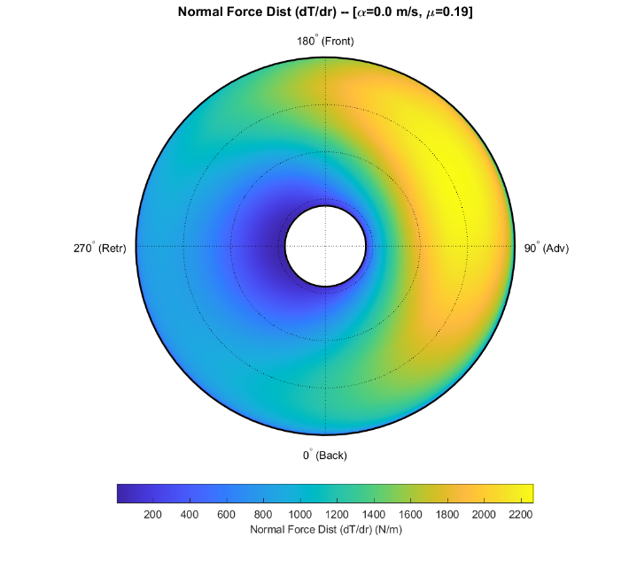
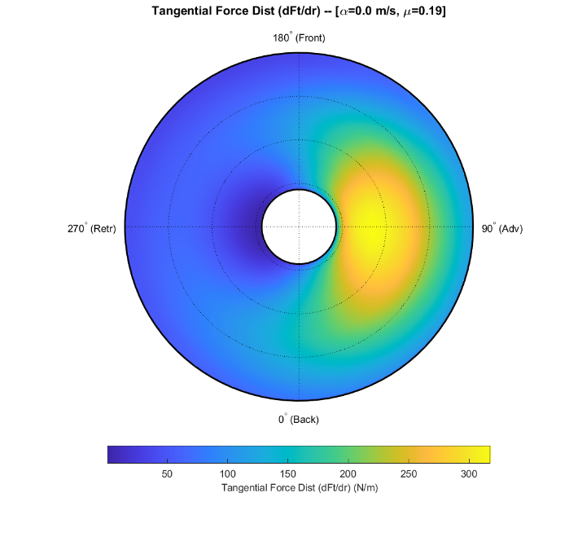
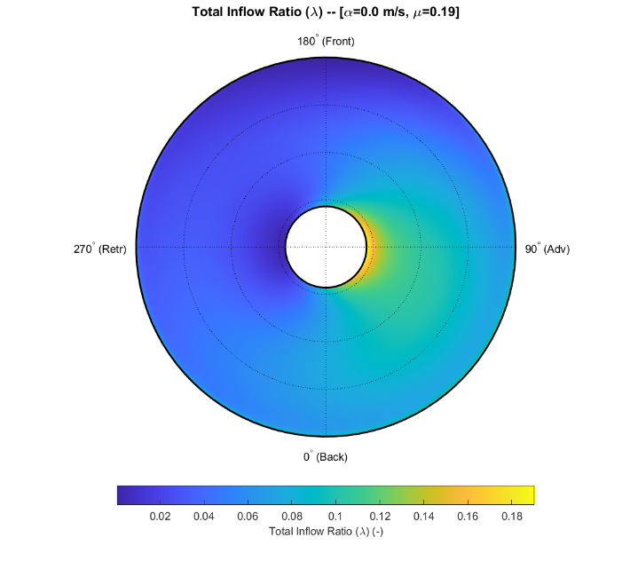
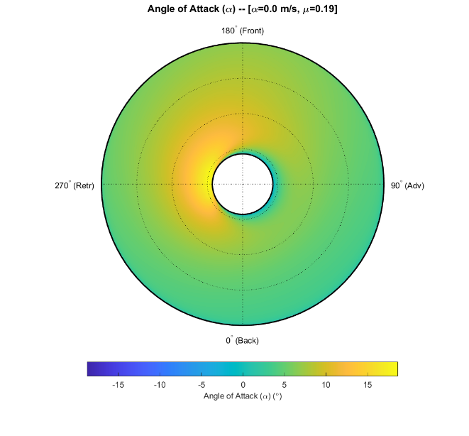

Sumário
- Introdução
- Convenção de azimute e sinais
- O que o BEMT mostra
- Inflow uniforme: por que CY é nulo
- Coleman: a simetria frente-trás é quebrada
- Dedução de CY com Coleman
- Por que a força aponta para o lado recuante
- Por que CY é menor que CH
- Exemplo numérico por BET: CT, CH e CY
- Limites da interpretação
- Conclusão
Introdução
Um rotor em voo à frente possui uma assimetria aerodinâmica forte entre os lados avançante e recuante. A velocidade relativa é maior no lado avançante e menor no recuante. Essa diferença domina o carregamento azimutal e aparece com clareza tanto na força normal quanto na força tangencial.
Essa assimetria, porém, não produz sozinha uma força lateral média. Com inflow uniforme, uma teoria de elemento de pá (BET, Blade Element Theory) ideal produz uma força longitudinal no plano do rotor, mas as contribuições laterais da frente e da traseira se cancelam. O resultado é
\[ C_Y=0. \]
O quadro muda quando o inflow possui um gradiente longitudinal. O modelo de Coleman–Feingold introduz exatamente essa assimetria frente-trás. O vetor de sustentação de cada elemento de pá passa a ter inclinação diferente na traseira e na frente do disco. O cancelamento lateral deixa de ser exato e aparece um pequeno \(C_Y\) direto.
Para o rotor considerado aqui, que gira no sentido anti-horário visto de cima, essa força aponta normalmente para o lado recuante. Sua magnitude continua menor que a força longitudinal \(C_H\).
Convenção de azimute e sinais
O rotor é visto de cima e avança para o norte. Usaremos a mesma convenção das figuras BEMT:
- \(\psi=0^\circ\): traseira do rotor;
- \(\psi=90^\circ\): lado direito, pá avançante;
- \(\psi=180^\circ\): frente do rotor;
- \(\psi=270^\circ\): lado esquerdo, pá recuante.
O eixo lateral de corpo \(+Y\) aponta para a direita. Portanto, uma força dirigida para o lado recuante, à esquerda, possui \(C_Y<0\).
Adotamos \(x\) positivo para a frente e \(Y\) positivo para a direita. A tração normal ao disco é \(T\). A força longitudinal no plano do rotor é \(H\) e será tomada positiva para trás, isto é, na direção de arrasto do rotor. A força lateral é \(Y\). Assim, em voo à frente usual, \(C_H>0\), enquanto uma força lateral para a esquerda tem \(C_Y<0\). Os coeficientes usados ao longo do texto são
\[ C_T=\frac{T}{\rho A(\Omega R)^2}, \qquad C_H=\frac{H}{\rho A(\Omega R)^2}, \qquad C_Y=\frac{Y}{\rho A(\Omega R)^2}, \]
onde \(A=\pi R^2\) é a área do disco, \(R\) é o raio do rotor, \(\rho\) é a densidade do ar e \(\Omega\) é a velocidade angular.
Com essa definição, a velocidade tangencial normalizada de um elemento de pá é
\[ u_T=\bar r+\mu\sin\psi, \]
onde \(\bar r=r/R\) é a posição radial normalizada e \(\mu=V/(\Omega R)\) é a razão de avanço. Aqui, \(V\) é a velocidade de voo.
Se \(w\) é a componente da velocidade relativa normal ao disco, definimos o inflow adimensional como \(\lambda=w/(\Omega R)\). O símbolo \(\lambda_0\) representa sua componente média sobre o disco. Quando houver corte de raiz, \(r_0\) é o raio a partir do qual começa a região aerodinâmica efetiva da pá e
\[ \boxed{ \bar r_0=\frac{r_0}{R} }. \]
Assim, \(\bar r_0=0\) representa o rotor ideal cuja região aerodinâmica se estende até o centro, enquanto \(\bar r_0=0{,}20\) significa que a integração aerodinâmica começa em \(20\%\) do raio.
No lado avançante, \(\psi=90^\circ\):
\[ u_T=\bar r+\mu. \]
No lado recuante, \(\psi=270^\circ\):
\[ u_T=\bar r-\mu. \]
A diferença entre esses dois lados é a principal assimetria do voo à frente.
O que o BEMT mostra
As quatro figuras abaixo foram obtidas com o mesmo modelo de elemento de pá acoplado à teoria de quantidade de movimento (BEMT, Blade Element Momentum Theory), em \(\mu=0{,}19\), usando inflow de Coleman. Neste estudo, o BEMT fornece o campo local mostrado nas figuras. A dedução analítica de \(C_Y\), por sua vez, usa o BET com o inflow prescrito pelo modelo de Coleman.

Figura 1 — Distribuição de força normal. O lado avançante, à direita, é muito mais carregado que o lado recuante.
A força normal evidencia a assimetria avançante–recuante. Como a pressão dinâmica varia aproximadamente com \(u_T^2\), o aumento de velocidade relativa no lado avançante produz uma diferença grande de carregamento.

Figura 2 — Distribuição de força tangencial. A variação avançante–recuante é dominante. Sobre ela existe uma assimetria frente–trás menor.
A força tangencial é a variável central para entender as forças no plano do rotor. Sua grande diferença entre os lados avançante e recuante gera principalmente \(C_H\). A diferença menor entre a traseira e a frente gera \(C_Y\).

Figura 3 — Inflow total. O campo não uniforme modifica o carregamento local ao longo do azimute.

Figura 4 — Ângulo de ataque. A variação de inflow altera simultaneamente o ângulo de ataque e a orientação da força aerodinâmica local.
As Figuras 3 e 4 mostram uma distinção importante. O inflow não modifica apenas a magnitude da sustentação. Ele altera também a direção do escoamento relativo visto pela seção e, portanto, a direção do próprio vetor de sustentação.
Inflow uniforme: por que CY é nulo
No modelo uniforme,
\[ \lambda(\bar r,\psi)=\lambda_0. \]
Considere a traseira e a frente do rotor. Na traseira, \(\psi=0^\circ\). Na frente, \(\psi=180^\circ\). Nos dois pontos,
\[ \sin\psi=0, \]
e, portanto,
\[ u_T=\bar r. \]
A velocidade tangencial é igual nas duas regiões. Se o inflow também é igual, o ângulo de inflow, o ângulo de ataque e a força tangencial possuem a mesma magnitude.
As direções laterais são opostas. Na traseira, a força tangencial aerodinâmica possui componente para a esquerda. Na frente, possui componente para a direita.
Logo,
\[ Y_{\text{trás}}+Y_{\text{frente}}=0 \]
e
\[ \boxed{C_Y=0}. \]
O rotor continua fortemente assimétrico entre avançante e recuante. O que permanece simétrico, no modelo de inflow uniforme, é especificamente o par frente–trás que determina a força lateral.
Coleman: a simetria frente-trás é quebrada
O NDARC, da NASA, representa a variação linear do inflow sobre o disco por um primeiro harmônico, isto é, por uma variação azimutal proporcional a \(\cos\psi\). Para voo puramente longitudinal, a contribuição de Coleman–Feingold pode ser escrita, na convenção deste estudo, como
\[ \boxed{ \lambda(\bar r,\psi) = \lambda_0 \left( 1+K_x\bar r\cos\psi \right) }. \]
O sinal positivo aparece porque \(\psi=0^\circ\) está na traseira do rotor.
O coeficiente longitudinal \(K_x\) mede a intensidade do gradiente longitudinal do inflow. No modelo de Coleman–Feingold, ele é relacionado ao ângulo de inclinação da esteira \(\chi\), medido entre o eixo do rotor e a direção média da esteira. Para voo à frente sem velocidade axial externa, \(\tan\chi\simeq\mu/|\lambda_0|\). A forma usada pelo NDARC é
\[ \boxed{ K_x= \frac{15\pi}{32} \tan\frac{\chi}{2} } \]
quando o multiplicador empírico aplicado ao modelo é igual a 1. Em termos de \(\mu\) e do inflow médio,
\[ \boxed{ K_x= \frac{15\pi}{32} \frac{\mu} {\sqrt{\mu^2+\lambda_0^2}+|\lambda_0|} }. \]
Na traseira,
\[ \lambda_{\text{trás}} = \lambda_0(1+K_x\bar r), \]
enquanto na frente,
\[ \lambda_{\text{frente}} = \lambda_0(1-K_x\bar r). \]
Assim,
\[ \boxed{ \lambda_{\text{trás}}> \lambda_{\text{frente}} }. \]
Essa desigualdade é o ingrediente que não existia no modelo uniforme.
Dedução de CY com Coleman
A dedução pode ser construída diretamente a partir da força de um elemento de pá.
Para pequenos ângulos de inflow,
\[ \phi\simeq\frac{\lambda}{u_T}. \]
Se \(\theta\) é o passo geométrico local da pá e \(a=dC_l/d\alpha\) é a inclinação da curva de sustentação, a aproximação linear fornece
\[ C_l=a\left(\theta-\phi\right). \]
Aqui, \(C_l\) é o coeficiente de sustentação bidimensional da seção e \(\alpha\simeq\theta-\phi\) é o ângulo de ataque.
Para uma seção de corda \(c\) e largura radial \(dr\), a sustentação elementar é aproximadamente
\[ dL= \frac{1}{2}\rho c(\Omega R)^2 a \left( \theta u_T^2-\lambda u_T \right)dr. \]
Como o vetor de sustentação está inclinado de um ângulo \(\phi\), existe uma componente no plano do rotor. Para pequenos ângulos,
\[ dF_i\simeq dL\,\phi. \]
Substituindo \(\phi=\lambda/u_T\),
\[ \boxed{ dF_i= \frac{1}{2}\rho c(\Omega R)^2a \left( \theta\lambda u_T-\lambda^2 \right)dr }. \]
Essa é a parcela de força tangencial associada à inclinação da sustentação. Para isolar o mecanismo de Coleman, consideraremos inicialmente apenas essa contribuição. Aqui, \(C_d\) denota o coeficiente de arrasto bidimensional da seção. Se \(C_d\) for tomado constante, a parcela de arrasto de perfil depende de \(u_T\) mas não do inflow e, neste modelo ideal, não cria a assimetria frente–trás necessária para produzir \(C_Y\).
Na convenção azimutal adotada, a projeção lateral é
\[ dY=-dF_i\cos\psi. \]
Somando \(N_b\) pás, fazendo a média em uma revolução e normalizando por \(\rho A(\Omega R)^2\), resulta
\[ \boxed{ C_Y = -\frac{\sigma a}{4\pi} \int_{\bar r_0}^{1} \int_0^{2\pi} \left( \theta\lambda u_T-\lambda^2 \right) \cos\psi \,d\psi\,d\bar r } \]
onde
\[ \sigma=\frac{N_bc}{\pi R} \]
é a solidez do rotor para corda constante e \(N_b\) é o número de pás. O limite inferior \(\bar r_0\) é o corte de raiz aerodinâmico definido anteriormente. Para um rotor ideal sem corte de raiz, usa-se \(\bar r_0=0\).
Agora substituímos as duas dependências azimutais:
\[ u_T=\bar r+\mu\sin\psi \]
e
\[ \lambda= \lambda_0 \left( 1+K_x\bar r\cos\psi \right). \]
A parte proporcional a \(\theta\lambda u_T\) torna-se
\[ \theta\lambda_0 \left( 1+K_x\bar r\cos\psi \right) \left( \bar r+\mu\sin\psi \right) \cos\psi. \]
Ao integrar em \(\psi\), os termos proporcionais a
\[ \cos\psi, \qquad \sin\psi\cos\psi, \qquad \sin\psi\cos^2\psi \]
desaparecem em uma revolução completa. O termo que sobrevive é
\[ \theta\lambda_0K_x\bar r^2\cos^2\psi. \]
Como
\[ \int_0^{2\pi}\cos^2\psi\,d\psi=\pi, \]
essa parcela fornece
\[ \pi\theta\lambda_0K_x\bar r^2. \]
Agora examinamos o termo \(-\lambda^2\):
\[ -\lambda^2\cos\psi = -\lambda_0^2 \left( 1+2K_x\bar r\cos\psi +K_x^2\bar r^2\cos^2\psi \right) \cos\psi. \]
Os termos em \(\cos\psi\) e \(\cos^3\psi\) integram para zero. Resta apenas
\[ -2\lambda_0^2K_x\bar r\cos^2\psi. \]
Depois da integração azimutal,
\[ -2\pi\lambda_0^2K_x\bar r. \]
Portanto,
\[ \int_0^{2\pi} \left( \theta\lambda u_T-\lambda^2 \right)\cos\psi\,d\psi = \pi K_x \left( \theta\lambda_0\bar r^2 - 2\lambda_0^2\bar r \right). \]
Substituindo de volta na definição de \(C_Y\),
\[ C_Y= -\frac{\sigma aK_x\lambda_0}{4} \int_{\bar r_0}^{1} \left( \theta\bar r^2 - 2\lambda_0\bar r \right)d\bar r. \]
A integração radial é imediata:
\[ \int_{\bar r_0}^{1}\bar r^2d\bar r = \frac{1-\bar r_0^3}{3}, \]
\[ \int_{\bar r_0}^{1}2\bar r\,d\bar r = 1-\bar r_0^2. \]
Chegamos então a
\[ \boxed{ C_Y = -\frac{\sigma aK_x\lambda_0}{4} \left[ \frac{\theta}{3} (1-\bar r_0^3) - \lambda_0 (1-\bar r_0^2) \right] }. \]
Para um rotor ideal sem corte de raiz, \(\bar r_0=0\):
\[ \boxed{ C_Y = -\frac{\sigma a}{4} K_x\lambda_0 \left( \frac{\theta}{3}-\lambda_0 \right) }. \]
A forma final deixa clara a origem matemática do fenômeno. O inflow uniforme não contém um harmônico em \(\cos\psi\). Coleman introduz esse harmônico. Depois da projeção lateral surge um termo em \(\cos^2\psi\), cuja média não é zero.
Por que a força aponta para o lado recuante
A matemática fornece o sinal, mas a geometria explica o mecanismo.
Na traseira do disco, Coleman prevê inflow maior. A componente normal do escoamento relativo sobre o elemento de pá aumenta. Consequentemente, o ângulo de inflow
\[ \phi\simeq\frac{\lambda}{u_T} \]
também aumenta.
A sustentação permanece aproximadamente perpendicular ao escoamento relativo. Quando \(\phi\) aumenta, o vetor de sustentação se inclina mais para trás em relação ao movimento tangencial local da pá. Essa inclinação aumenta a componente da sustentação no plano do rotor. Em linguagem física, aumenta a parcela de arrasto induzido do elemento.
Na traseira, \(\psi=0^\circ\). A pá se desloca tangencialmente para a direita. A componente aerodinâmica que se opõe a esse movimento aponta para a esquerda.
Na frente, \(\psi=180^\circ\). A pá se desloca tangencialmente para a esquerda. A componente aerodinâmica correspondente aponta para a direita.
Com inflow uniforme, as duas magnitudes são iguais e se cancelam.
Com Coleman,
\[ \lambda_{\text{trás}}> \lambda_{\text{frente}}, \]
portanto o vetor de sustentação fica mais inclinado na traseira. A componente tangencial de origem induzida fica maior nessa região.
Assim,
$$ |Y_{}|
|Y_{}|. $$
Há mais força para a esquerda na traseira do disco do que força para a direita na frente. O saldo aponta para a esquerda, que neste rotor é o lado recuante.
Nas condições usuais em que o termo entre colchetes da expressão de \(C_Y\) é positivo,
\[ \boxed{C_Y<0}. \]
Por que CY é menor que CH
\(C_H\) e \(C_Y\) nascem de assimetrias diferentes.
\(C_H\) é produzido principalmente pela forte assimetria avançante–recuante. Ela aparece diretamente na velocidade tangencial:
\[ u_T=\bar r+\mu\sin\psi. \]
Como as forças aerodinâmicas dependem aproximadamente do quadrado dessa velocidade, a diferença entre os lados avançante e recuante é grande.
\(C_Y\) depende de uma assimetria de segunda ordem sobre esse campo. Coleman acrescenta a modulação longitudinal
\[ K_x\lambda_0\bar r\cos\psi. \]
Ela não substitui a assimetria avançante–recuante. Apenas modifica um pouco a força tangencial entre a traseira e a frente.
A Figura 2 mostra exatamente essa hierarquia: a variação direita–esquerda da força tangencial é dominante, enquanto a diferença frente–trás é muito menor.
Por isso, em condições usuais, \(C_H\) permanece a força dominante no plano do rotor e \(C_Y\) é uma correção lateral menor.
Exemplo numérico por BET: CT, CH e CY
A comparação numérica será feita diretamente pelas equações do BET. As figuras anteriores não serão integradas. Nesta comparação simplificada, \(C_H\) inclui arrasto de perfil e a componente induzida da sustentação. O \(C_Y\) calculado é a parcela direta produzida por Coleman. Com \(C_d\) constante, o arrasto de perfil não acrescenta \(C_Y\) neste modelo porque não cria uma diferença frente–trás.
Considere um rotor representativo em voo à frente, com
\[ \mu=0{,}40, \qquad \sigma=0{,}10, \qquad a=5{,}7\ \mathrm{rad}^{-1}, \]
\[ \theta=0{,}12\ \mathrm{rad}, \qquad \bar r_0=0{,}20, \qquad \bar C_d=0{,}040. \]
O símbolo \(\bar C_d\) representa, apenas neste exemplo simplificado de \(C_H\), um coeficiente médio efetivo de arrasto de seção. Ele substitui a polar de arrasto que um BEMT completo avaliaria em cada elemento e em cada azimute, levando em conta ângulo de ataque, número de Mach e número de Reynolds. Portanto, \(\bar C_d\) não deve ser confundido com o \(C_{d0}\) de um aerofólio descarregado.
Tração
Para passo e corda constantes, a integração BET da força normal fornece
\[ \boxed{ C_T = \frac{\sigma a}{2} \left[ \theta \left( \frac{1-\bar r_0^3}{3} + \frac{\mu^2}{2}(1-\bar r_0) \right) - \frac{\lambda_0}{2} (1-\bar r_0^2) \right] }. \]
Para fechar o problema, usamos a teoria de quantidade de movimento aplicada ao rotor em voo à frente:
\[ C_T= 2\lambda_0 \sqrt{\mu^2+\lambda_0^2}. \]
Resolvendo as duas equações conjuntamente,
\[ \lambda_0\simeq0{,}0144 \]
e
\[ \boxed{ C_T\simeq0{,}01153 }. \]
Força longitudinal
No mesmo BET simplificado, a força tangencial de um elemento contém duas parcelas principais:
\[ dF_t \simeq dD + dL\,\phi. \]
A primeira é o arrasto de perfil. A segunda é a componente induzida da sustentação inclinada.
Projetando essa força na direção longitudinal e integrando uma revolução, obtém-se
$$ $$
para a magnitude da força de arrasto longitudinal.
O primeiro termo é a contribuição de perfil:
\[ C_{H,\mathrm{perfil}} \simeq 3{,}84\times10^{-4}. \]
O segundo é a contribuição induzida:
\[ C_{H,\mathrm{ind}} \simeq 7{,}88\times10^{-5}. \]
Assim,
\[ \boxed{ C_H \simeq 4{,}63\times10^{-4} }. \]
Comparando com a tração,
\[ \boxed{ \frac{C_H}{C_T} \simeq 0{,}040 } \]
ou cerca de \(4{,}0\%\).
Força lateral de Coleman
Para o mesmo ponto,
\[ K_x= \frac{15\pi}{32} \frac{\mu} {\sqrt{\mu^2+\lambda_0^2}+|\lambda_0|} \simeq1{,}42. \]
Substituindo na expressão deduzida anteriormente,
\[ C_Y = -\frac{\sigma aK_x\lambda_0}{4} \left[ \frac{\theta}{3} (1-\bar r_0^3) - \lambda_0 (1-\bar r_0^2) \right], \]
obtemos
\[ \boxed{ C_Y \simeq -7{,}54\times10^{-5} }. \]
Logo,
\[ \boxed{ \frac{C_Y}{C_T} \simeq -0{,}0065 } \]
ou aproximadamente \(-0{,}65\%\) da tração.
A comparação direta é
\[ \boxed{ \frac{C_H}{|C_Y|} \simeq6{,}1. } \]
Nesse exemplo simples, portanto, a força lateral de Coleman é cerca de seis vezes menor que a força longitudinal.
Esse fator não é universal. Em condições de maior razão de avanço ou maior arrasto médio de seção, \(C_H\) cresce relativamente mais. Por exemplo, mantendo a mesma ordem de carregamento, um caso com \(\mu=0{,}45\) e \(\bar C_d=0{,}050\) fornece uma razão próxima de
\[ \frac{C_H}{|C_Y|} \simeq8{,}5. \]
É nesse sentido que \(C_Y\) pode aparecer aproximadamente uma ordem de grandeza abaixo de \(C_H\) em um BEMT de voo à frente. O valor exato depende do ponto de operação, da polar, do carregamento e do modelo de inflow.
Limites da interpretação
A dedução analítica isola a força lateral aerodinâmica direta associada ao inflow longitudinal.
A expressão de \(C_Y\) considera a componente tangencial gerada pela inclinação da sustentação e assume pequenos ângulos, aerodinâmica linear, passo e corda constantes. Um BEMT completo também inclui a polar real do aerofólio, variação radial de geometria, compressibilidade em voo à frente, estol e escoamento reverso quando aplicáveis.
Também não foi incluída a resposta de flap e a dinâmica do rotor. Um gradiente longitudinal de inflow modifica o carregamento de primeiro harmônico e pode inclinar o plano descrito pelas pontas das pás. Essa inclinação reorienta o vetor de tração e pode acrescentar outra parcela de força lateral.
Conclusão
O voo à frente cria primeiro uma forte assimetria avançante–recuante:
\[ u_T=\bar r+\mu\sin\psi. \]
Essa assimetria domina a força tangencial e produz a maior parte de \(C_H\).
Com inflow uniforme, traseira e frente continuam equivalentes. Suas contribuições laterais possuem a mesma magnitude e sinais opostos. Portanto,
\[ C_Y=0. \]
Coleman acrescenta um primeiro harmônico longitudinal:
\[ \lambda = \lambda_0 \left( 1+K_x\bar r\cos\psi \right). \]
O inflow maior na traseira aumenta o ângulo de inflow e inclina mais o vetor de sustentação. A componente tangencial de origem induzida fica maior nessa região. Como ela aponta para a esquerda na traseira e para a direita na frente, o desequilíbrio produz uma força lateral para o lado recuante.
Para o rotor considerado,
\[ \boxed{C_Y<0}. \]
A comparação por BET também estabelece a escala do efeito. No exemplo numérico,
\[ \frac{C_H}{C_T}\simeq4{,}0\%, \qquad \frac{|C_Y|}{C_T}\simeq0{,}65\%, \]
portanto
\[ C_H\simeq6\,|C_Y|. \]
Em pontos de maior razão de avanço e maior arrasto médio de seção, a diferença pode se aproximar de uma ordem de grandeza.
Referências
[1] Coleman, R. P., Feingold, A. M., e Stempin, C. W., Evaluation of the Induced-Velocity Field of an Idealized Helicopter Rotor, NACA Advance Restricted Report L5E10, NACA Wartime Report L-126, National Advisory Committee for Aeronautics, June 1945. Link
[2] Johnson, W. R., NDARC — NASA Design and Analysis of Rotorcraft, NASA/TP-2009-215402, NASA Ames Research Center, December 2009. Link
[3] Johnson, W., Rotorcraft Aeromechanics, Cambridge University Press, Cambridge, 2013. Link
[4] Johnson, W., Helicopter Theory, Princeton University Press, Princeton, NJ, 1980. — Referência geral para teoria de elemento de pá, teoria de quantidade de movimento e voo à frente. Link
[5] Stepniewski, W. Z., Rotary-Wing Aerodynamics, Volume 1: Basic Theories of Rotor Aerodynamics with Application to Helicopters, NASA-CR-3082, National Aeronautics and Space Administration, 1979. — Discute a combinação entre teoria de elemento de pá e teoria de quantidade de movimento. Link
[6] Runyan, H. L., e Tai, H., Compressible, Unsteady Lifting-Surface Theory for a Helicopter Rotor in Forward Flight, NASA Technical Paper 2503, NASA Langley Research Center, December 1985. — Discute efeitos de compressibilidade em rotores em voo à frente. Link